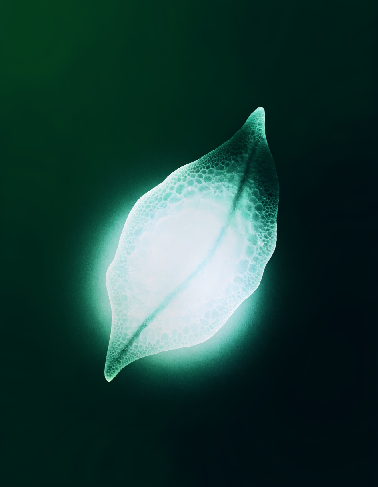

Pharma · Board strategy deck
Helix Therapeutics
A board deck for a clinical-stage biotech. Quiet and light, with the pipeline laid out plainly.

A board deck for a clinical-stage biotech. Quiet and light, with the pipeline laid out plainly.
Science, told with restraint.
A board wants signal, not spectacle: the pipeline, the money, the risks, the ask. And no stock-photo science.
So I went light and green, with soft charts and a hand-drawn leaf motif. Every slide has its own layout, so it never feels like a template.
An inline-SVG leaf cluster ties the cover and close to life-sciences — bespoke, never clip-art.
Soft gradient bars, an area chart and a donut make the financials feel modern and calm.
Deep-green slides punctuate the deck — the vision, the timeline, the close.
